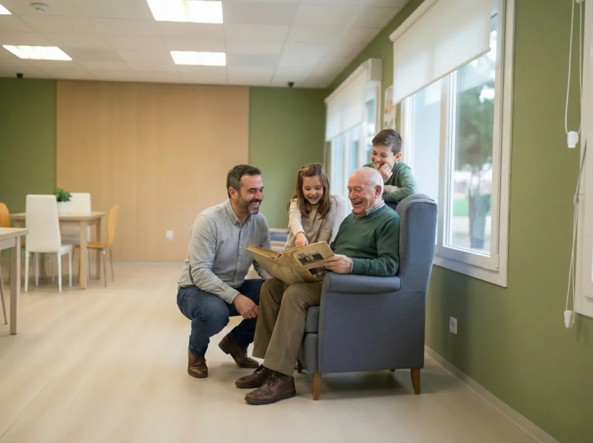

Sobre nosotros
Nuestro geriátrico es un espacio pensado para brindar cuidado, acompañamiento y bienestar a las personas mayores, ofreciendo un ambiente seguro, cómodo y agradable. Contamos con un equipo preparado para brindar atención y asistencia durante el día, teniendo en cuenta las necesidades y preferencias de cada residente.
Buscamos crear un entorno donde cada persona pueda sentirse acompañada, valorada y cómoda, disfrutando de espacios comunes, actividades recreativas y diferentes servicios de bienestar. Nuestro objetivo es ofrecer una atención cercana y personalizada, promoviendo una buena calidad de vida, la convivencia y el bienestar de cada residente.

Nuestra misión
Nuestra misión es contribuir al bienestar y la calidad de vida de las personas mayores, ofreciendo un entorno de cuidado, respeto y comprensión. Procuramos que cada residente reciba una atención cercana, teniendo en cuenta sus necesidades individuales y promoviendo su comodidad y tranquilidad.
También buscamos favorecer la autonomía de las personas mayores, respetando sus decisiones y acompañándolas en las actividades de la vida cotidiana cuando lo necesiten.

Nuestra visión
Nuestra visión es consolidarnos como un espacio de referencia en el cuidado de las personas mayores, destacándonos por la calidad humana, el compromiso y la atención personalizada.
Aspiramos a construir un entorno donde los residentes puedan sentirse cómodos y seguros, manteniendo sus vínculos personales y disfrutando de una convivencia basada en el respeto y la confianza.

Nuestros valores
El respeto, la empatía, la responsabilidad y el compromiso son valores fundamentales para nosotros. Creemos que todas las personas merecen recibir un trato digno, independientemente de su edad o de las necesidades de asistencia que puedan tener.
La paciencia y la comprensión también son esenciales, ya que cada persona tiene sus propios tiempos, experiencias y formas de relacionarse. Por eso, consideramos importante escuchar a los residentes y prestar atención a sus preferencias.

Atención y acompañamiento
Entendemos que el cuidado de las personas mayores no consiste solamente en atender sus necesidades cotidianas, sino también en brindar compañía, escuchar sus inquietudes y generar un vínculo de confianza.
Por este motivo, buscamos promover una atención cercana y respetuosa, adaptada a las características de cada residente. Nuestro propósito es que las personas se sientan acompañadas y puedan desarrollar su vida cotidiana en un ambiente agradable.

Bienestar y convivencia
Creemos que mantener una vida social activa es importante para el bienestar de las personas mayores. Compartir actividades, conversar y participar en diferentes propuestas permite fortalecer los vínculos entre los residentes y generar nuevas experiencias.
Por eso, valoramos la importancia de los espacios comunes y de las oportunidades para compartir con otras personas. Buscamos que el geriátrico sea un lugar donde se fomente el compañerismo, la participación y el respeto mutuo.

Un entorno de confianza para las familias
Sabemos que elegir un lugar de cuidado para un familiar es una decisión importante. Por eso, consideramos fundamental construir una relación basada en la comunicación, la confianza y el respeto con las familias de los residentes.
Nuestro propósito es que tanto las personas mayores como sus seres queridos encuentren un ambiente cercano y acogedor, donde puedan sentirse escuchados y tratados con consideración.
